适用版本：1.3.13
更新日期：2026-11-07
官网：mistlab.dev · 下载：GitHub Releases
本手册面向日常使用 MistTerm 连接服务器、操作终端、传文件的用户。不涉及编译源码或参与开发；开发者文档见仓库内 docs/ 目录。
MistTerm 是一款 SSH 终端客户端，日常用来：
支持 Windows、macOS 与 Linux。
MistTerm-*-windows-x86_64-setup.exe，双击安装.dmg，拖入「应用程序」文件夹安装后无需单独安装 OpenSSH；连接远程 Linux 服务器即可使用。
启动后会出现主窗口：左侧为活动栏（可打开连接列表与各面板），中间为工作区（连接后显示终端），顶部为菜单；提示信息以右下角 Toast 显示（无常驻底栏）。
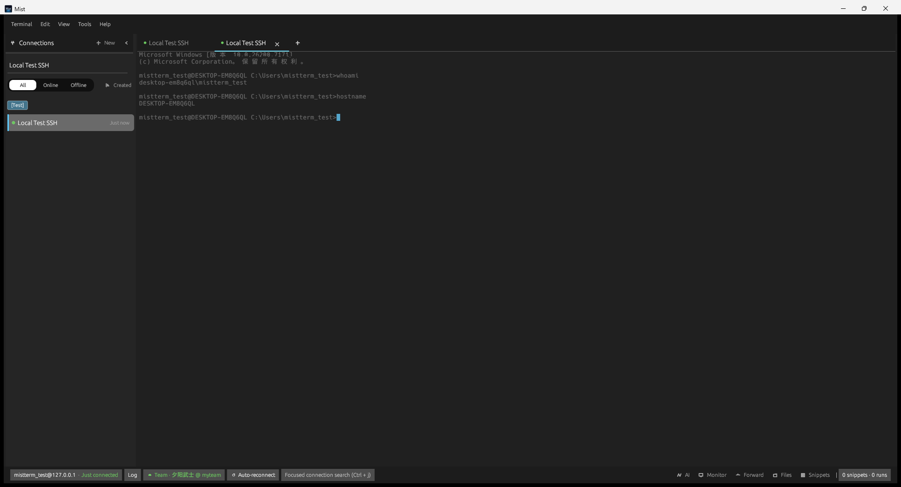
图 2-1：已连接服务器时的主界面
连接、密码、片段等配置保存在本机用户目录（已加密），例如：
%APPDATA%\mistterm\~/Library/Application Support/mistterm/请勿手动编辑这些文件；在应用内修改即可。
| 步骤 | 操作 |
|---|---|
| 1 | 按 Ctrl+N（Mac：⌘N）打开「新建会话」 |
| 2 | 填写名称、主机 IP/域名、端口（默认 22）、用户名、密码或密钥 |
| 3 | 点击 保存并连接，或在侧栏双击该会话 |
| 4 | 在中间终端输入命令，如 ls、cd、top |
| 5 | 需要传文件时：菜单 视图 → SFTP，或点击左侧活动栏「文件」 |
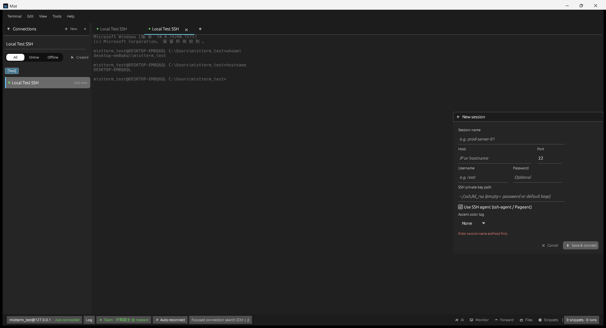
图 3-1：新建会话
| 区域 | 位置 | 说明 |
|---|---|---|
| 顶栏菜单 | 窗口顶部 | 终端、编辑、视图、工具、帮助（macOS 多用系统菜单） |
| 活动栏 | 窗口左侧 | 连接列表、片段、文件、转发、监控、AI、偏好；Ctrl+B（Mac：⌘B）可隐藏，左缘窄条可恢复 |
| 连接列表 | 活动栏「连接」展开 | 已保存的会话，支持分组与搜索（默认收起） |
| 工作区 | 中间 | 终端标签页；连接后在此输入命令 |
| 侧面板 | 右侧（按需打开） | SFTP、监控、片段、AI 等（同时只开一个） |
| Toast | 右下角 | 临时提示 / 需确认提示（已无常驻底栏） |
| 想做什么 | 怎么打开 |
|---|---|
| 新建/编辑连接 | Ctrl+N / 连接列表选中后 Ctrl+E |
| 打开 SFTP | 视图 → SFTP 或活动栏「文件」 |
| 看 CPU/内存 | 视图 → 监控 或活动栏「监控」 |
| 命令面板 | 终端失焦时 Ctrl+K（Mac：⌘K）。模糊搜索会话、片段、历史和应用动作 |
| 命令片段 | 活动栏「片段」，或在命令面板里输入片段名后回车 |
| AI 助手 | Ctrl+Shift+A 或活动栏「AI」 |
| 显示/隐藏活动栏 | Ctrl+B（Mac：⌘B）或 视图 菜单 |
| 偏好设置 | Ctrl+, 或活动栏底部设置 |
| 帮助与快捷键 | 帮助 → 快速入门 / 键盘快捷键 / 关于 |
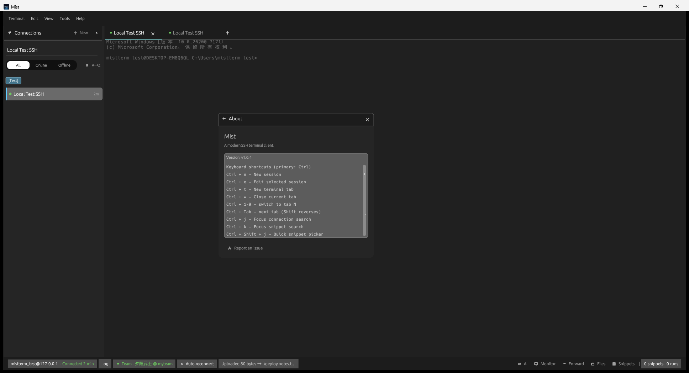
图 4-1：侧栏会话列表（可分组、搜索）
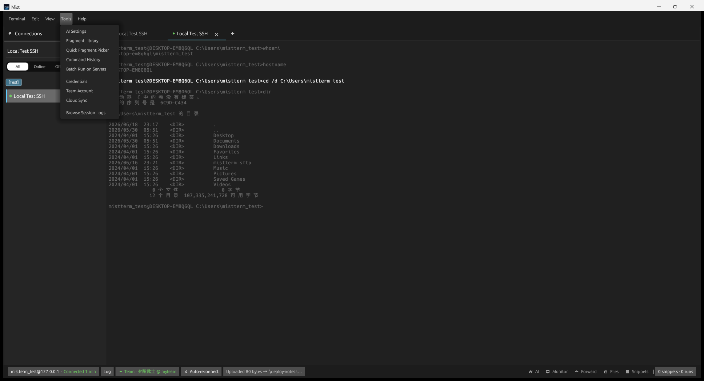
图 4-2：视图菜单 — 切换各侧面板
终端没有焦点时，按 Ctrl+K（macOS 为 ⌘K）打开命令面板。输入即可模糊搜索并执行：
键盘：输入过滤，方向键上下，Enter 执行，Esc 关闭。面板打开时按键不会送进终端。
为什么不是 Ctrl+Shift+K： 终端失焦时 Ctrl+K / ⌘K 与系统快捷键不冲突，所以 Windows / Linux 仍用 Ctrl+K，macOS 用 ⌘K。终端聚焦时 Ctrl+K 仍然发给 shell，删到行尾（readline kill-to-EOL），面板不会抢走这个键。
快速片段选择器仍是 Ctrl+Shift+J，同样只在终端失焦时打开。
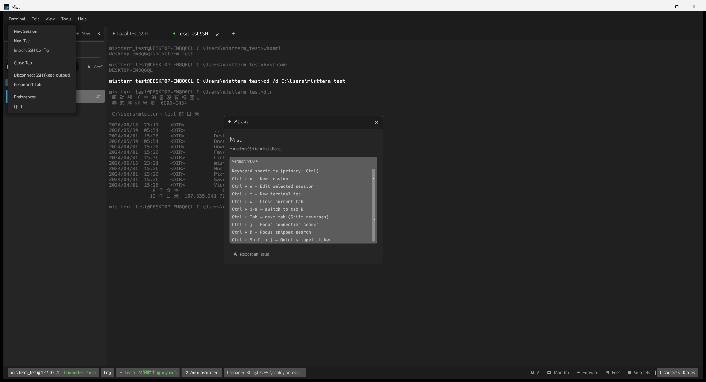
图 5-1：也可通过 终端 → 导入 SSH Config 从已有 ~/.ssh/config 批量导入
| 方式 | 适用场景 |
|---|---|
| 密码 | 服务器允许密码登录 |
| 私钥文件 | 本机 .pem / id_ed25519 等 |
| SSH Agent | 已启动 ssh-agent / Pageant，密钥已加载 |
| FIDO2 / 安全密钥 (OpenSSH) | 已用 ssh-add 加载 ecdsa-sk 或 ed25519-sk。触摸和 PIN 由系统提示完成 |
| 跳板机 | 在高级选项中填写 ProxyJump（与 OpenSSH 相同） |
会话认证方式选 FIDO2 / 安全密钥 (OpenSSH)。MistTerm 不自带 FIDO 协议栈，签名交给本机 OpenSSH agent（ecdsa-sk / ed25519-sk）。连接时窗口会提示触摸密钥或在系统提示里输入 PIN；取消触摸、PIN 错误、代理里没有密钥或密钥文件找不到，都会显示失败原因，不会当成已登录。密码和普通密钥在这条路径上不会被拿来顶替。
下面是三端各自的最短步骤。只保证 OpenSSH 能驱动的安全密钥（常见是带 ed25519-sk / ecdsa-sk 的 FIDO2 密钥，例如部分 YubiKey 5），不表示每一款硬件都可用。三端都能完成登录。
Windows
ssh-agent）设为自动并启动。Pageant 不能为 sk 密钥签名。ssh-keygen -t ed25519-sk -f $env:USERPROFILE\.ssh\id_ed25519_sk（也可用 -t ecdsa-sk）。按提示触摸密钥；若要 PIN，在系统提示里输入。ssh-add $env:USERPROFILE\.ssh\id_ed25519_sk。密钥只放在硬件里时，用 ssh-add -K。macOS
ssh-keygen -t ed25519-sk -f ~/.ssh/id_ed25519_sk。ssh-add --apple-use-keychain ~/.ssh/id_ed25519_sk（或 ssh-add ~/.ssh/id_ed25519_sk）。Linux
ssh -V）。在启动 MistTerm 的同一个图形会话里运行 OpenSSH 的 ssh-agent，并让进程继承 SSH_AUTH_SOCK。桌面自带的 gnome-keyring SSH 组件不一定能签 sk 密钥，请用 OpenSSH 的 ssh-agent。ssh-keygen -t ed25519-sk -f ~/.ssh/id_ed25519_sk，然后 ssh-add ~/.ssh/id_ed25519_sk。SSH_ASKPASS（例如 ssh-askpass）和 SSH_ASKPASS_REQUIRE=force，PIN 会出现在图形提示里。密码和会话信息在本地加密保存，换电脑需重新配置或恢复备份。配置文件为加密格式，用记事本打开会看到乱码，属正常现象。
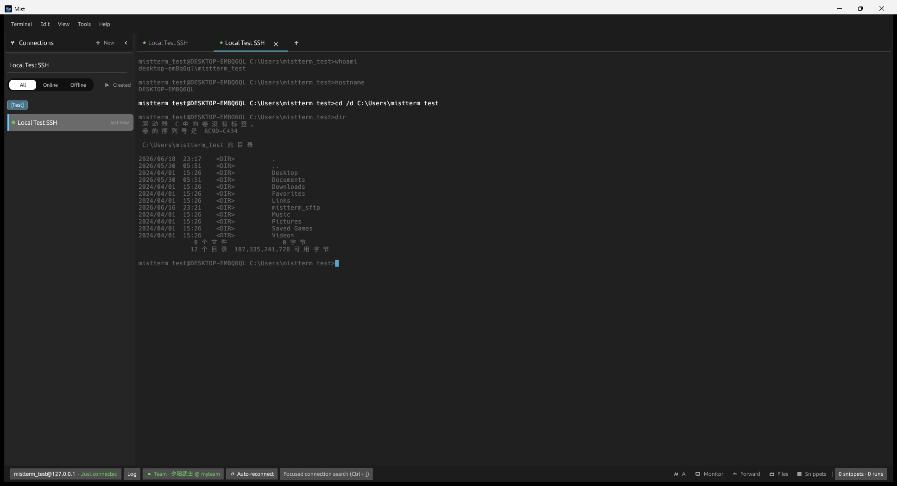
图 6-1：终端中执行命令
图 6-2：终端内查找
图 6-3：命令历史窗口
菜单 终端 里也有这几项。标签上右键同样可以分屏。
Windows 与 Linux 用 Ctrl+Shift，macOS 用 ⌘⇧。
cd，Windows 远程的 PowerShell） 鼠标在终端里用来拖选文字和滚动。下面两项当前不做，不是偶发故障：
一条命令和它的输出可以收成一块，用来上一条 / 下一条跳转，或一次复制「命令 + 输出」。分界只认 shell integration 发出的 OSC 133（VS Code 的 OSC 633 同样认）。没有这些标记时，不会根据回车或提示符去猜，vim / less / htop 的全屏画面也不会被收成一块。
最短启用
~/.bashrc：__mist_cmd_block() {
local ec=$?
printf '\e]133;D;%s\a' "$ec"
printf '\e]133;A\a'
}
PROMPT_COMMAND="__mist_cmd_block${PROMPT_COMMAND:+;$PROMPT_COMMAND}"
PS1="${PS1}"'\[\e]133;B\a\]'
~/.zshrc（若已有 precmd / preexec，把下面两行 printf 加进现有函数）：precmd() {
local ec=$?
printf '\e]133;D;%s\a' "$ec"
printf '\e]133;A\a'
}
preexec() { printf '\e]133;C\a'; }
PS1="${PS1}"'%{\e]133;B\a%}'
C（命令已提交）可以不发。只发 A / B / D 时，命令结束后仍是一块。新开一个终端标签后生效。
怎么用（终端要处于焦点；Windows / Linux 为 Ctrl+Shift，macOS 为 ⌘⇧）
复制最多保留开头 4000 行、200000 个字符，更长会截断并注明。进入 vim / less 的那条命令仍是一块，复制内容不含全屏画面。
打开方式：菜单 视图 → SFTP，或左侧活动栏「文件」。
界面分为本机与远端两栏：
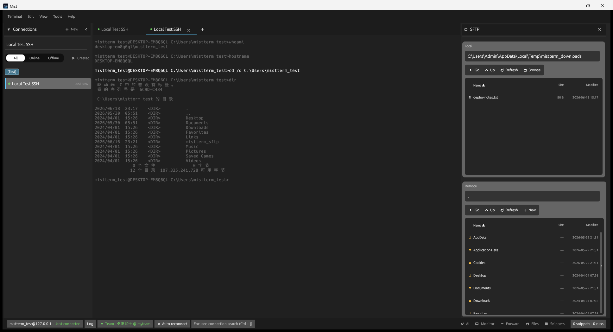
图 7-1：SFTP 双栏文件管理
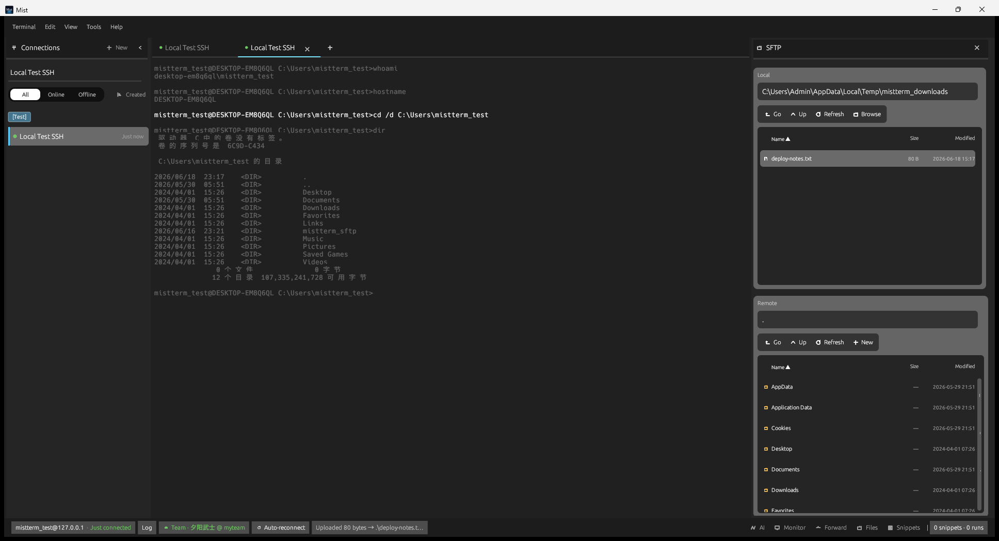
图 7-2：上传完成后的 Toast 提示
典型流程 — 上传文件到服务器：
下载则反向操作：选中远端文件 → 下载到本机当前目录。
改配置：远端双击文本文件（或右键「编辑」）用本机编辑器打开，保存后按提示回传。
若服务器已安装 lrzsz，可在终端里：
# 从本地上传文件到当前远程目录（执行后按提示选择文件）
rz -bye
# 从远程下载文件到本机
sz 文件名
MistTerm 会自动接管传输并显示进度。若传输异常，请确认远端使用 rz -bye，并检查防火墙是否中断长连接。
将常用命令存为片段，需要时一键插入，支持 <变量名> 占位符。
片段是一条可检索的命令。若要按顺序把好几行发进当前这一个已连接会话，用 工具 → 发送序列（见 13.5），不要把它建成片段。
| 方式 | 说明 |
|---|---|
| Ctrl+K | 打开命令面板并执行片段（仅终端失焦；聚焦时发给 shell，删到行尾。Mac 为 ⌘K） |
| Ctrl+Shift+J | 快速片段选择器（仅终端失焦） |
| 活动栏「片段」 | 打开右侧片段面板 |
| 工具 → 命令片段库 | 管理、新建、编辑片段 |
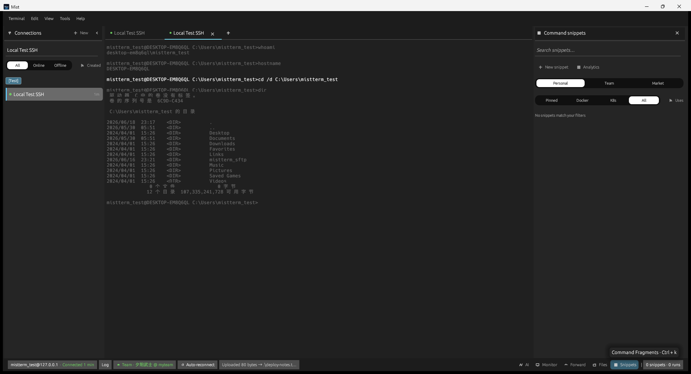
图 8-1：从活动栏打开片段侧栏
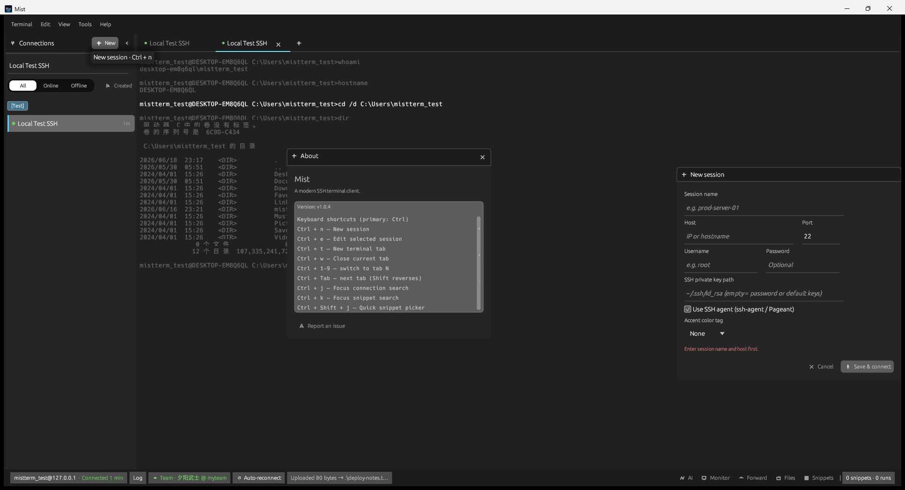
图 8-2：片段库 — 新建与编辑
片段内容示例：
kubectl logs -f deployment/<服务名> -n <命名空间>
执行时会弹出输入框，填好变量后自动替换并发送到终端。
若已登录 MistLab 团队账号，可使用团队共享片段（见第 11 节）。
团队片段支持 admin / editor / viewer 角色权限，并支持针对单个成员覆盖角色权限。编辑团队片段时会自动取得编辑锁；异常退出后，客户端会在下次启动或登录时清理本人残留的编辑锁。
图 9-1：主机监控
监控依赖 SSH 连接。若连接断开，图表会停止更新；重新连接即可。
本地端口:目标主机:目标端口远程端口:目标主机:目标端口图 9-2：端口转发管理

图 10-1：AI 设置
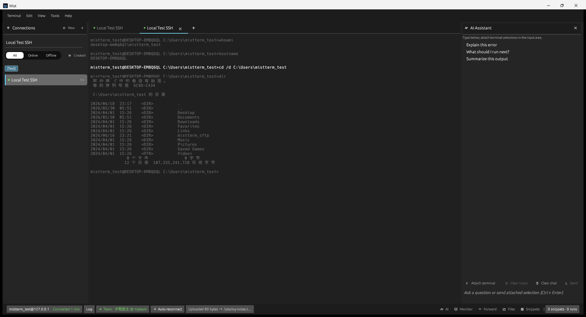
图 10-2：AI 助手对话
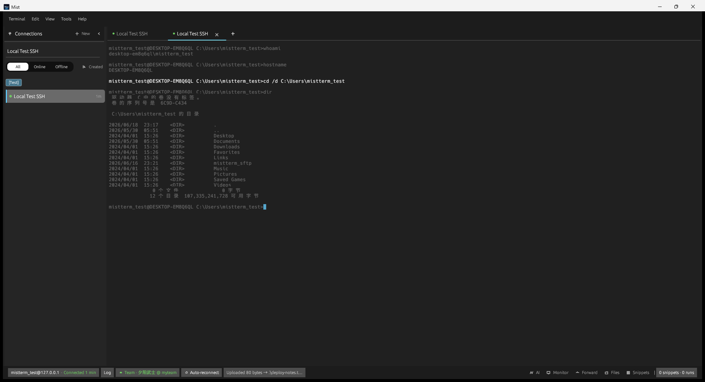
图 10-3：工具菜单 — AI、片段、批量执行、凭证等
面向使用 MistLab 团队版 的用户：
未登录团队时，所有个人功能照常使用。
如果目标服务器部署了团队命令审计 Agent，客户端会在连接后接收服务器侧审计结果。团队设置中的 Agent 列表可查看主机、启用状态和最后心跳；管理员可以启用或停用 Agent。
MistTerm 有两层命令安全检查：本地检查用于快捷提示，服务器侧团队策略才是部署了 Agent 时的权威判定。两者都在危险命令实际发送或执行前给出提示或拦截：
| 行为 | 说明 |
|---|---|
| 拦截 | 如 rm -rf / 等极高风险命令无法发送 |
| 确认 | 弹窗询问「是否继续」 |
| 告警 | 允许执行但记录告警 |
本地检查覆盖片段执行、批量执行、AI 填入的命令、mist exec、发送序列里的每一非空行，以及在终端里直接手敲的命令：本地策略生效时，按 Enter 前会先检查当前这一行（包括「用到终端」放进来的内容和单行粘贴），被拦截时回车不会发出，命令留在输入行里；需确认时点「确认发送」才会执行。以下情况手敲命令不做本地检查，回车照常发送：vim/less/top 等全屏程序里、密码或口令提示行、rz/sz 传输进行中。用方向键、Tab 补全或历史回忆改过的行，客户端只能看到你实际敲入的字符，以服务器侧策略为准。
可在 偏好设置 中查看或调整本地规则。加入团队后，管理员下发的策略会同步到本机；服务器侧 Agent 的判定会通过终端连接回传，客户端会显示「服务器策略」前缀。
当服务器侧策略拦截命令时：
本地规则对应的提示使用「本地检查」前缀。客户端不会通过 AI 提供绕过团队策略的做法；AI 建议也不会替代服务器侧策略判定。
客户端会定期检查当前主机的 Agent 心跳。Agent 离线或超过约 5 分钟没有心跳时，终端顶部会显示黄色提示；Agent 恢复后会显示恢复通知。此时本地提示仍可工作，但服务器侧强制审计不可视为可用，应联系团队管理员处理。
工具 → 凭证：集中保存服务器账号、数据库、API Token 等，供会话或片段引用。默认本地加密存储。
在偏好设置中可开启会话日志，自动保存终端交互记录，便于事后审计。可通过 工具 → 浏览会话日志 查看。
进程 panic 时，报告写在配置目录的 logs/crash-reports/（与 logs/hang-reports/ 同级）。下次打开时，若这份报告比上次正常退出更新，或上次没有正常退出且已有报告，会弹一次摘要（版本、时间、panic 首行），可打开目录或复制全文。第一次安装不提示。之后如果进程被强制结束或发生没有报告的原生崩溃（例如 SIGSEGV），下次仍会提示一次，说明没有新的崩溃报告。正常退出后再打开则不提示。
帮助 → 诊断 可随时打开「崩溃报告目录」和「卡顿报告目录」。Rust panic 能落盘；原生 SIGSEGV 目前没有本机报告文件。
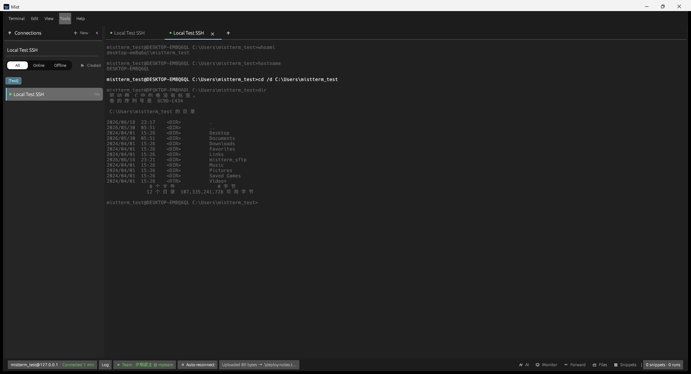
图 13-1：偏好设置
图 13-2：关于 Mist
工具 → 批量执行：选择多台已保存的主机，输入同一条命令并行执行，适合巡检（结果分主机显示，过长输出会自动截断）。
工具 → 发送序列（命令面板里单独一类「发送序列」，不是「片段」）把几行文字按顺序发进当前这一个已连接窗格。
0 表示上一行发出后马上发下一行。只做固定等待，不会等远端出现提示符即使当前标签开了「同时输入」，发送序列也只进入当前窗格，不会发到其它窗格或其它标签。
本地命令策略生效时，每一非空行会先做和手敲回车一样的检查。被禁止的行不会发出，后面的行也不再发。需要确认时，确认之后才继续。
| 命令片段 | mist exec |
AI 批量 | 发送序列 | |
|---|---|---|---|---|
| 什么时候用 | 一条可检索的命令，常带 <占位符>，可放进片段库 |
在命令行对一台或多台主机执行，不占用终端标签 | 用自然语言规划，确认后在多台主机执行 | 连上之后，总要在当前会话里按顺序敲的那几行 |
| 发到哪里 | 当前终端（先填变量） | 另开 SSH，收回输出 | 计划里的多台主机 | 只发到当前这一个已连接窗格 |
| 明确不做 | 不按固定间隔重放多行 | 不在已经打开的交互会话里敲键 | 不是写死的键序 | 不等待远端提示符；不广播到其它会话 |
以下以 Windows 为例；macOS 将 Ctrl 换为 ⌘ 即可（如 Ctrl+N → ⌘N）。
| 快捷键 | 功能 |
|---|---|
| Ctrl+N | 新建会话 |
| Ctrl+E | 编辑所选会话 |
| Ctrl+Shift+T | 为所选会话新建终端标签（Mac：⌘T） |
| Ctrl+Shift+W | 关闭当前标签（Mac：⌘W） |
| Ctrl+Tab / Ctrl+Shift+Tab | 下一 / 上一标签 |
| Ctrl+1 … Ctrl+9 | 切换到第 N 个标签 |
| Ctrl+B | 显示 / 隐藏活动栏 |
| Ctrl+J | 聚焦连接搜索（仅终端失焦；聚焦时发给 shell，换行） |
| Ctrl+K | 打开命令面板（仅终端失焦；可搜会话、片段、历史、动作。聚焦时发给 shell，删到行尾。Mac 为 ⌘K。不用 Ctrl+Shift+K） |
| Ctrl+Shift+J | 快速片段选择器（仅终端失焦） |
| Ctrl+F / F3 | 终端内查找 |
| Ctrl+C | 中断前台程序（SIGINT），有选区也一样。复制用 Ctrl+Shift+C（Mac：⌘C） |
| Ctrl+Shift+V（Mac：⌘V） | 粘贴到终端 |
| Ctrl+Shift+↑ / Ctrl+Shift+↓（Mac：⌘⇧↑ / ⌘⇧↓） | 上一条 / 下一条命令块（需要 shell integration，见 6.5） |
| Ctrl+Shift+O（Mac：⌘⇧O） | 复制当前命令块（命令和输出；过长会截断） |
| Ctrl+Shift+P（Mac：⌘⇧P） | 粘贴历史。菜单在 工具 → 粘贴历史。一次粘贴仍是 Ctrl+Shift+V（Mac：⌘V）。私钥和口令提示只做尽力过滤，并不完备 |
| Ctrl+R | 终端聚焦时发给 shell（反向搜索）。失焦时打开 Mist 命令历史；菜单在 工具 → 命令历史 |
| Ctrl+Shift+A | AI 助手面板 |
| Ctrl+Shift+L | 终端选区发送到 AI |
| Ctrl+Shift+D / Ctrl+Shift+U（Mac：⌘⇧D / ⌘⇧U） | 终端左右 / 上下分屏 |
| Ctrl+, | 偏好设置 |
| 帮助 → 关于 | 关于与快捷键说明（不用 Ctrl+H；Mac 上 ⌘H 为系统隐藏窗口） |
| Alt+B / Alt+F | 终端聚焦时发给 shell，按词向左 / 向右跳（Mac：Option+B / Option+F） |
| Alt+D / Alt+Backspace | 终端聚焦时发给 shell，向右 / 向左按词删除（Mac 用 Option） |
| Alt+. | 终端聚焦时发给 shell，插入上一条命令的最后参数（Mac：Option+.） |
| Esc | 关闭当前弹窗、菜单 |
完整列表以应用内 帮助 → 键盘快捷键 为准。
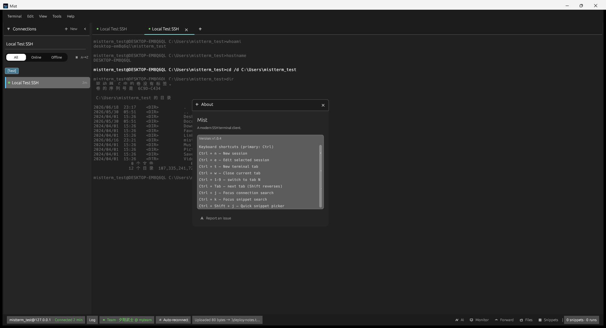
图 14-1：应用内帮助 — 快速入门
ssh 命令测试） lrzsz（which rz） rz -bye Application Support/mistterm/，可手动删除 前往 GitHub Issues 描述现象、版本号与操作系统，勿在 issue 中粘贴密码或密钥。
MistTerm v1.3.13 用户手册 · MistLab